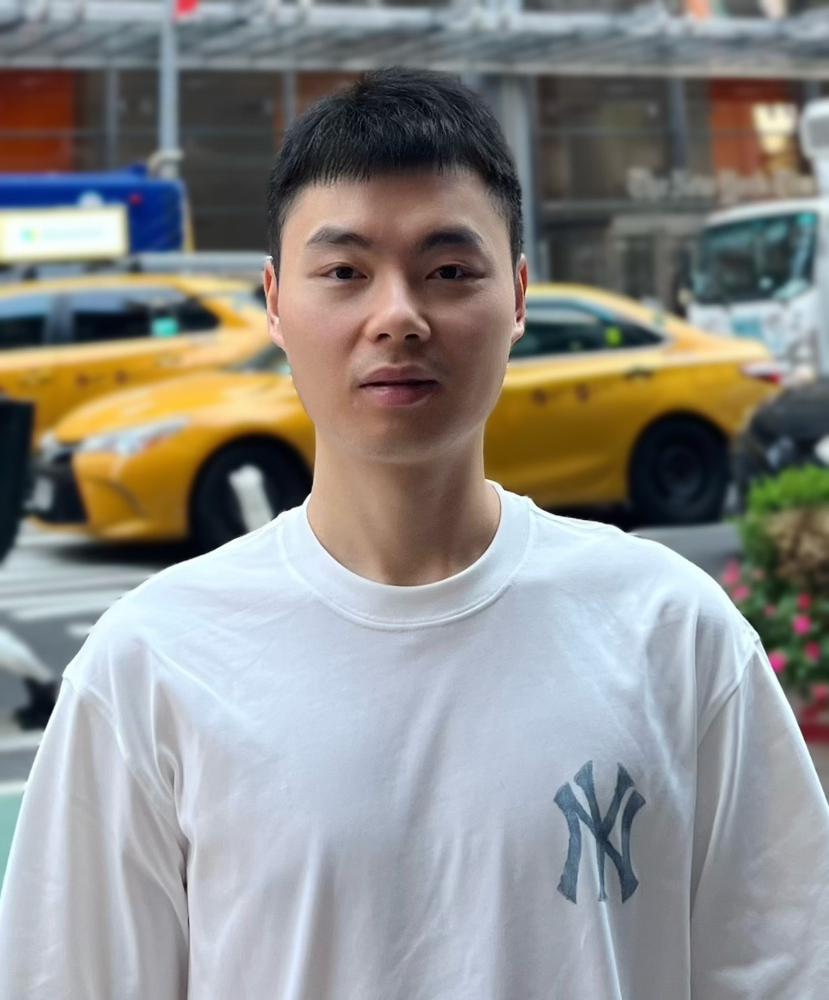

Yaocai Huang
I am from China and currently a fourth-year Ph.D. student in Biomedical Engineering at the University of Michigan.
I am a member of the Optical Imaging Lab under the supervision of Prof. Xueding Wang.
Google Scholar LinkedIn Email: hyaocai@umich.edu
Research Interests
My research focuses on ionizing radiation acoustic imaging (iRAI) and photoacoustic endoscopy, aiming to advance iRAI technologies for more precise radiotherapy and develop novel imaging tools to assess intestinal diseases. I have experience in both preclinical and human studies, with a strong track record in translational research, experimental design, and data analysis. Specifically, I am dedicated to improving the accuracy and clinical utility of iRAI in radiotherapy, and designing innovative endoscopic photoacoustic imaging devices and methods for evaluating intestinal diseases.
Education
- Ph.D. in Biomedical Engineering, University of Michigan, Ann Arbor (Sep 2022 – Present)
- M.Eng. in Computer Technology, University of Chinese Academy of Sciences (Sep 2017 – Jul 2020)
- B.Eng. in Automation, University of Science and Technology Beijing (Sep 2013 – Jul 2017)
Publications
- Huang Y, Oraiqat I, Litzenberg D, Subramanian Karthikesh M, Tichacek C, Gonzalez G, Xu Z, Dykstra S, Li B, Hadley S, Moros EG, Zhang M, Carson PL, Cuneo KC, Wang X, El Naqa I, Zhang W. Ionizing radiation acoustic and ultrasound dual-modality imaging for visualization of dose on anatomical structures during radiotherapy. Photoacoustics. 2025;44:100742.
- Huang Y, Wei L, Litzenberg D, Li B, Ma C, Kim H, Liu Y, Zhang C, Carson PL, El Naqa I, Zhang W, Wang X. Towards quantitative ionizing radiation acoustic imaging (iRAI) for radiation dose measurement: validation from simulations to experiments. Medical Physics. 2025; in press.
- Ni L, Peng X, Huang Y, Zhu Y, Johnson L, Eaton KA, Dixon J, Wang X, Higgins P, Xu G. Assessing intestinal fibrosis using an endoscopic photoacoustic–ultrasound balloon catheter in rabbits and a human subject. Journal of Crohn’s and Colitis. 2025; in press.
- [Qiu Y, Huang Y], Zhang Z, Cox BF, Liu R, Hong J, Mu P, Lay HS, Cummins G, Desmulliez MPY, Clutton E, Zheng H, Qiu W, Cochran S. Ultrasound capsule endoscopy with a mechanically scanning micro-ultrasound: a porcine study. Ultrasound in Medicine & Biology. 2020;46(3):796–804.
- Su M, Zhang Z, Hong J, Huang Y, Mu P, Yu Y, Liu R, Liang S, Zheng H, Qiu W. Cable-shared dual-frequency catheter for intravascular ultrasound. IEEE Transactions on Ultrasonics, Ferroelectrics, and Frequency Control. 2019;66(5):849–856.
- Hong J, Su M, Yu Y, Zhang Z, Liu R, Huang Y, Mu P, Zheng H, Qiu W. A dual-mode imaging catheter for intravascular ultrasound application. IEEE Transactions on Medical Imaging. 2019;38(3):657–663.
Presentations
- Huang Y, et al. Ionizing radiation acoustic and ultrasound dual-modality imaging for 3D visualization of dose on anatomical structure. Photons Plus Ultrasound: Imaging and Sensing 2025, SPIE, San Francisco, CA. January 25–30, 2025, poster.
- Huang Y, et al. Characterizing intestinal obstructions with a photoacoustic-ultrasound balloon catheter: studies with animals and human subjects in vivo. Photons Plus Ultrasound: Imaging and Sensing 2025, SPIE, San Francisco, CA. January 25–30, 2025, oral.
- Huang Y, et al. Quantitative ionizing radiation acoustic imaging for radiation dose measurement: a phantom study validation. Photons Plus Ultrasound: Imaging and Sensing 2024, SPIE, San Francisco, CA. January 27–February 1, 2024, oral.
- Huang Y, et al. A colonoscope-compatible photoacoustic and ultrasonic imaging catheter: initial clinical study in human subjects. Photons Plus Ultrasound: Imaging and Sensing 2024, SPIE, San Francisco, CA. January 27–February 1, 2024, oral.
- Huang Y, et al. In Vitro Study of a Tethered Micro-ultrasound Capsule Endoscopy and 3D Image Reconstruction. IEEE International Ultrasonics Symposium (IUS), Glasgow, UK. October 6–9, 2019, oral.
- Huang Y, et al. Development of a mechanically-scanning microultrasound capsule endoscopy device and demonstration in vivo. IEEE International Ultrasonics Symposium (IUS), Kobe, Japan. October 22–25, 2018, oral.
Skills
- Lab Skills: Multimodal Imaging (iRAI, Photoacoustic, Ultrasound), MATLAB Data Processing, Animal Studies, Translational Imaging Research, Endoscopic Catheter Design, Verasonics Platform Operation, Laser System Operation
- Computer Skills: MATLAB, k-Wave, Field II, SOLIDWORKS, Amira Software
Hosted on GitHub Pages